#1 · 2881 富邦金2026-09-21 09:00 → 09-24 13:30
-0.99%
entry 151.50 stop 148.00 (−3.50) target 158.50 exit 150.00 time -1.50 破底 148.00 @ 09-18 10:00 站回 09-21 09:00 MA5 150.40 / MA10 151.25 / MA20 151.25 fwd +1d +1.98% +3d +0.99% +5d —
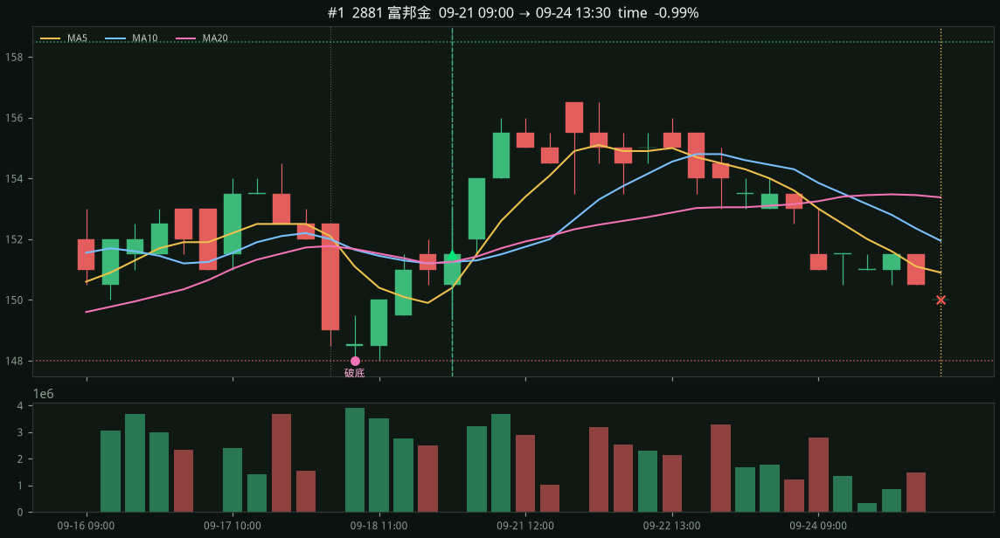
9/21–9/24 · 成交額前200 · 股價<1000 · 基準日 20260924 · 200 檔 · 成交額末名約 3.4 億
跌破 MA20 後待 4～36 根（中間最多 2 根假站上），深度 ≥ 1.8%，最低點為近 16 根新低，再站回 MA20。
破底後 36 根內第一根收盤 > MA5 / MA10 / MA20 進場。
回測出場：停在破底低、2R、或 20 根時間停。加總％是各筆報酬相加，不是組合複利。
漏斗：跌破 981 → 成波 355 → 進場 355
· 太短 288 · 不夠深 23 · 非破底 173
· 假站過多 0 · 逾時 142 · 沒站上均線 0
· 進場價過高 1
出場：2R 2 · 停損 5 · 時間 1 · 未平 27
· 收盤後 +1d +0.28% · +3d +0.25% · +5d —
entry 151.50 stop 148.00 (−3.50) target 158.50 exit 150.00 time -1.50 破底 148.00 @ 09-18 10:00 站回 09-21 09:00 MA5 150.40 / MA10 151.25 / MA20 151.25 fwd +1d +1.98% +3d +0.99% +5d —

entry 176.50 stop 168.00 (−8.50) target 193.50 exit 193.50 target +17.00 破底 168.00 @ 09-17 12:00 站回 09-21 09:00 MA5 174.00 / MA10 173.00 / MA20 175.12 fwd +1d +0.57% +3d -0.28% +5d —
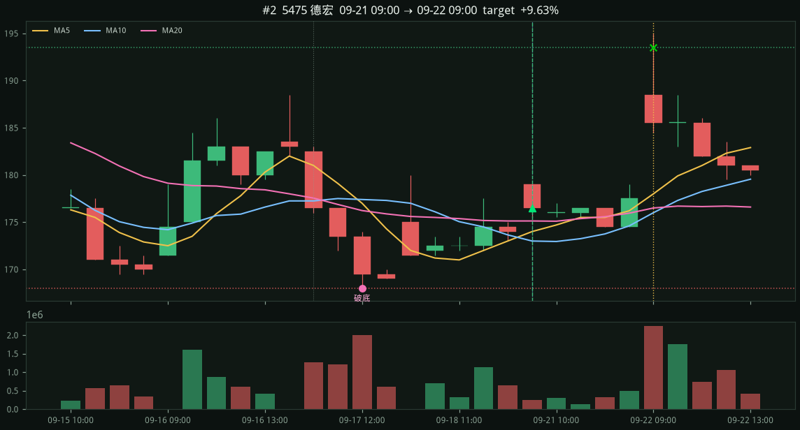
entry 112.50 stop 109.00 (−3.50) target 119.50 exit 110.50 open -2.00 破底 109.00 @ 09-18 11:00 站回 09-21 10:00 MA5 110.80 / MA10 111.15 / MA20 111.15 fwd +1d +0.89% +3d -0.89% +5d —
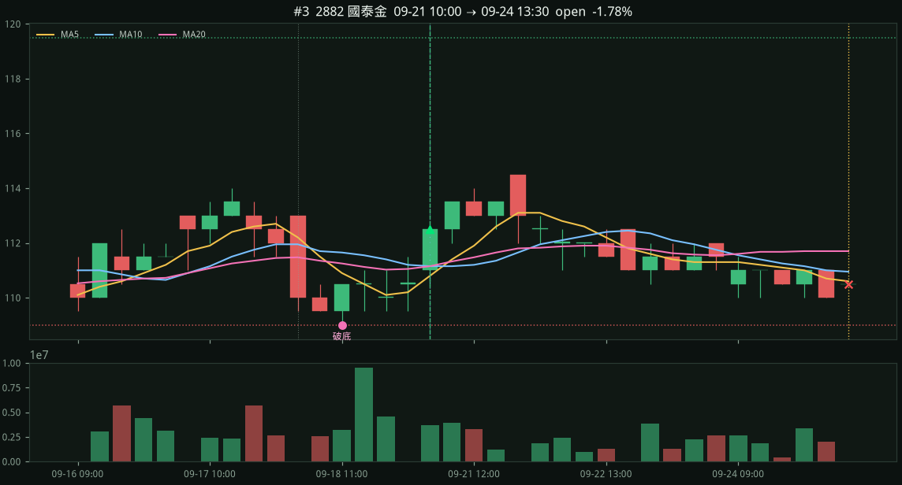
entry 43.85 stop 42.60 (−1.25) target 46.35 exit 42.60 stop -1.25 破底 42.60 @ 09-18 10:00 站回 09-21 10:00 MA5 43.32 / MA10 43.59 / MA20 43.74 fwd +1d +0.23% +3d -2.39% +5d —
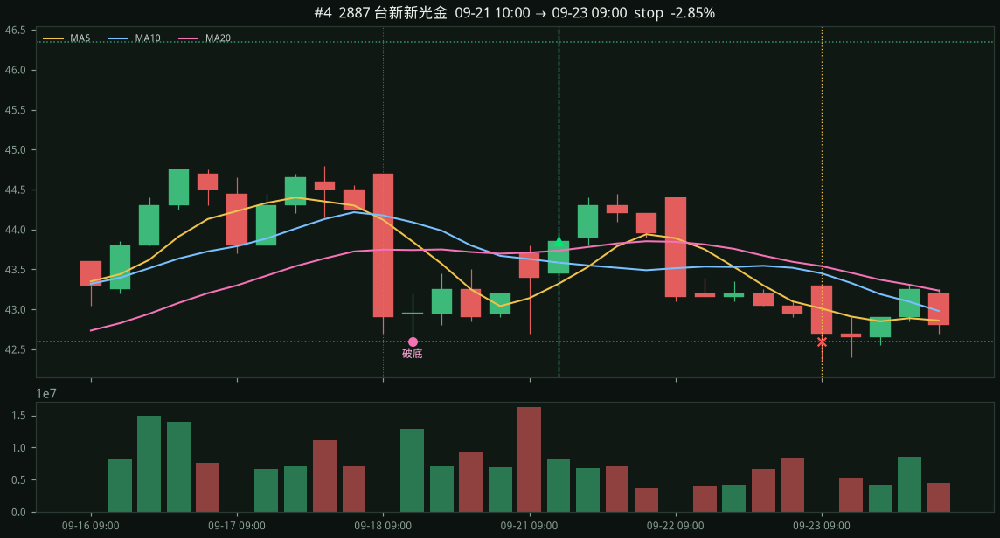
entry 46.25 stop 44.90 (−1.35) target 48.95 exit 45.60 open -0.65 破底 44.90 @ 09-21 09:00 站回 09-21 09:00 MA5 46.03 / MA10 46.20 / MA20 46.15 fwd +1d -0.11% +3d -1.73% +5d —
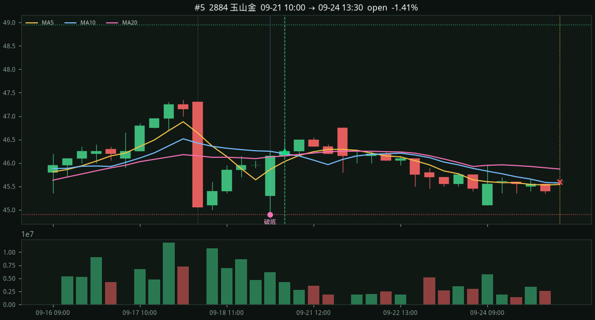
entry 51.00 stop 50.00 (−1.00) target 53.00 exit 50.00 stop -1.00 破底 50.00 @ 09-21 09:00 站回 09-21 10:00 MA5 50.78 / MA10 50.99 / MA20 50.98 fwd +1d -0.20% +3d -2.25% +5d —
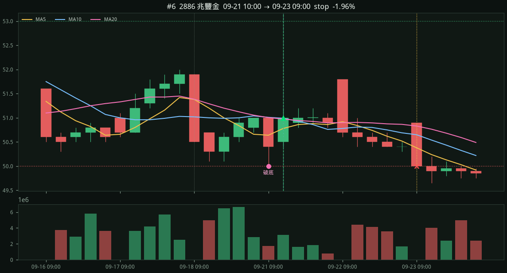
entry 39.90 stop 38.90 (−1.00) target 41.90 exit 39.50 open -0.40 破底 38.90 @ 09-18 10:00 站回 09-21 11:00 MA5 39.75 / MA10 39.85 / MA20 39.86 fwd +1d -0.75% +3d -0.13% +5d —
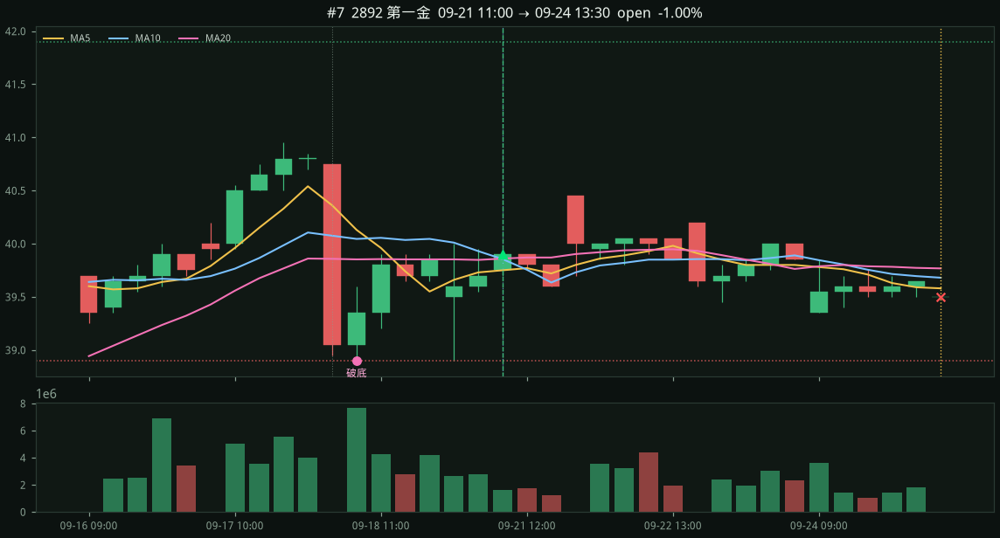
entry 500.00 stop 463.50 (−36.50) target 573.00 exit 475.50 open -24.50 破底 463.50 @ 09-21 09:00 站回 09-22 09:00 MA5 474.40 / MA10 473.45 / MA20 478.73 fwd +1d -2.00% +3d -4.90% +5d —
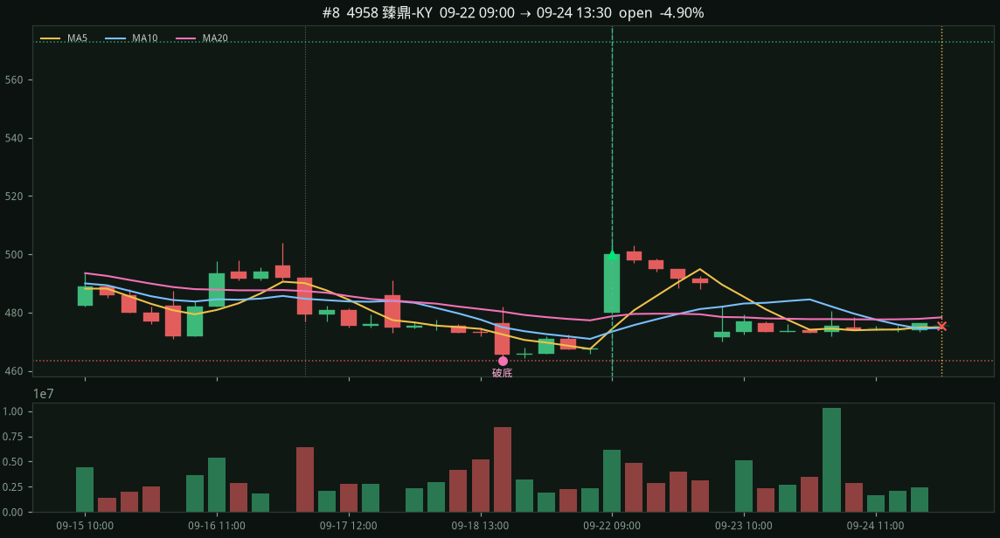
entry 124.00 stop 118.50 (−5.50) target 135.00 exit 123.00 open -1.00 破底 118.50 @ 09-17 10:00 站回 09-22 09:00 MA5 120.30 / MA10 119.90 / MA20 120.40 fwd +1d +4.03% +3d -0.81% +5d —
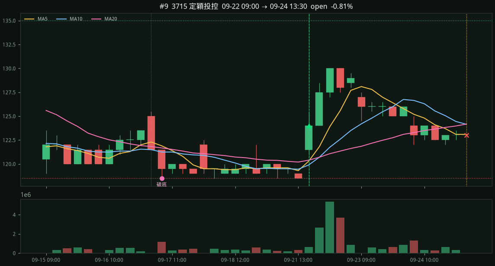
entry 182.00 stop 176.50 (−5.50) target 193.00 exit 193.00 target +11.00 破底 176.50 @ 09-21 12:00 站回 09-22 10:00 MA5 179.60 / MA10 180.45 / MA20 181.85 fwd +1d -1.10% +3d +15.11% +5d —
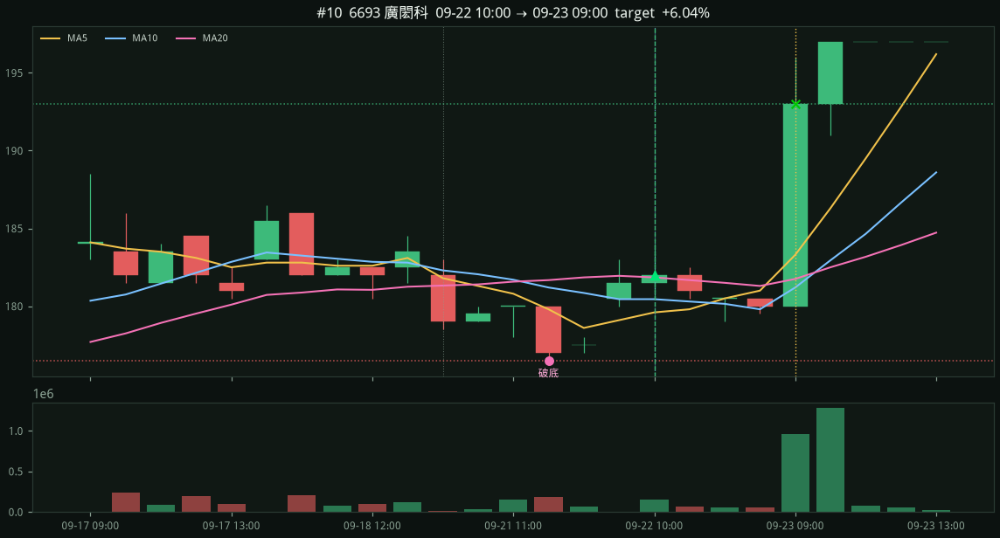
entry 146.00 stop 143.50 (−2.50) target 151.00 exit 143.50 stop -2.50 破底 143.50 @ 09-18 12:00 站回 09-22 10:00 MA5 144.80 / MA10 144.70 / MA20 145.80 fwd +1d +0.00% +3d +0.00% +5d —
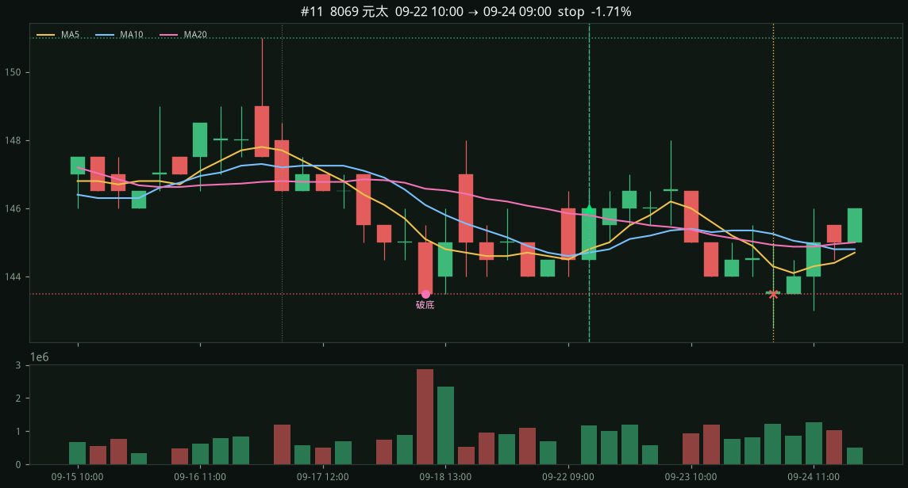
entry 391.50 stop 350.50 (−41.00) target 473.50 exit 389.00 open -2.50 破底 350.50 @ 09-22 10:00 站回 09-23 09:00 MA5 363.60 / MA10 364.90 / MA20 366.65 fwd +1d +0.00% +3d — +5d —
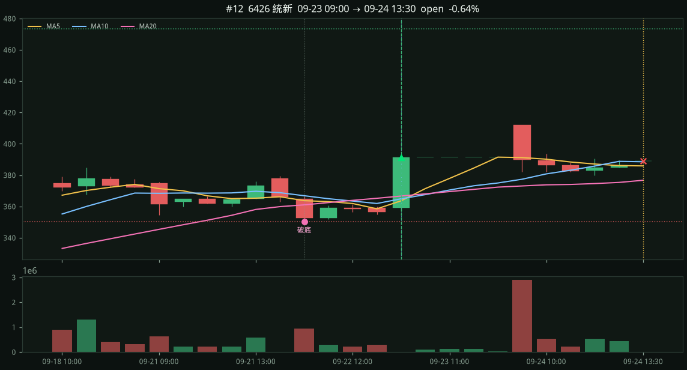
entry 9.11 stop 8.68 (−0.43) target 9.97 exit 8.86 open -0.25 破底 8.68 @ 09-22 12:00 站回 09-23 09:00 MA5 8.80 / MA10 8.97 / MA20 8.99 fwd +1d -0.77% +3d — +5d —
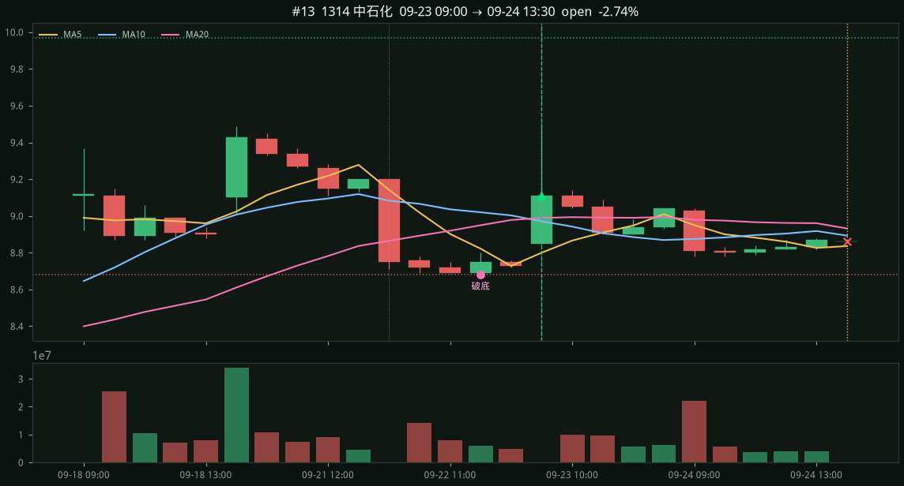
entry 127.00 stop 121.50 (−5.50) target 138.00 exit 121.50 stop -5.50 破底 121.50 @ 09-22 12:00 站回 09-23 09:00 MA5 124.00 / MA10 125.75 / MA20 126.92 fwd +1d -3.15% +3d — +5d —
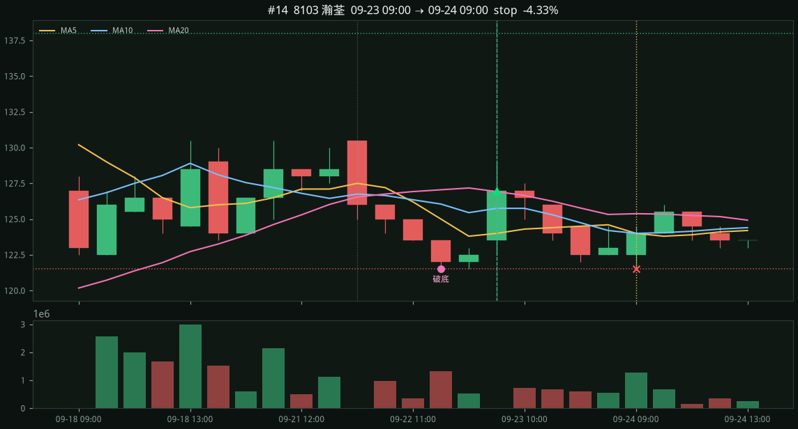
entry 73.40 stop 68.60 (−4.80) target 83.00 exit 72.80 open -0.60 破底 68.60 @ 09-23 10:00 站回 09-23 11:00 MA5 70.26 / MA10 70.28 / MA20 70.42 fwd +1d -0.68% +3d — +5d —
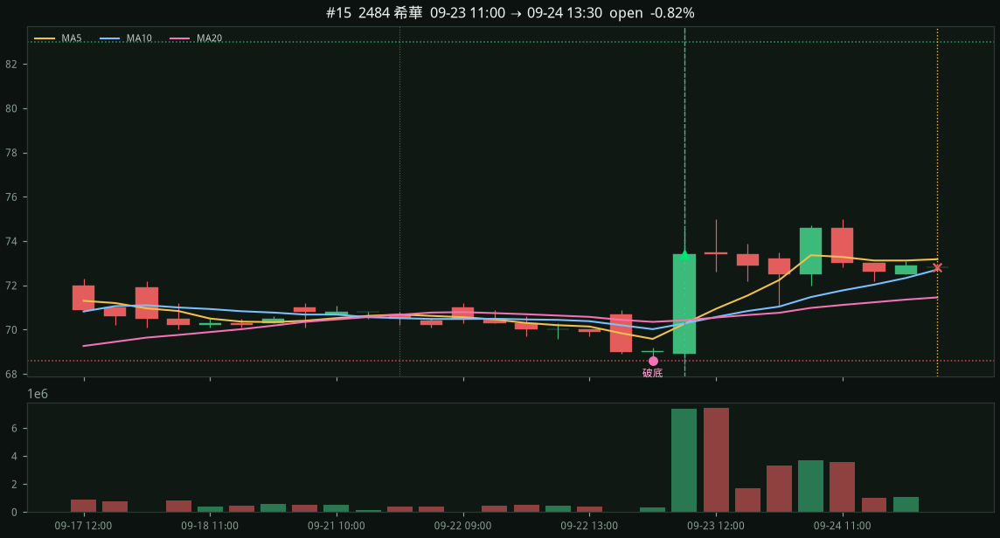
entry 71.30 stop 70.60 (−0.70) target 72.70 exit 70.60 stop -0.70 破底 70.60 @ 09-23 09:00 站回 09-23 12:00 MA5 70.96 / MA10 71.02 / MA20 71.28 fwd +1d -0.84% +3d — +5d —
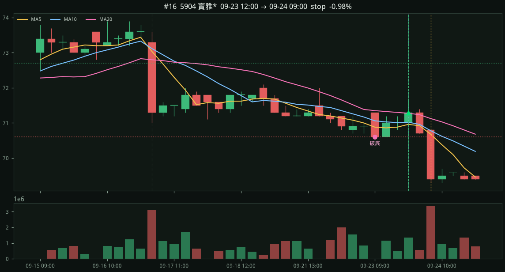
entry 281.00 stop 273.00 (−8.00) target 297.00 exit 276.50 open -4.50 破底 273.00 @ 09-22 10:00 站回 09-23 12:00 MA5 278.50 / MA10 277.25 / MA20 280.23 fwd +1d +0.00% +3d — +5d —
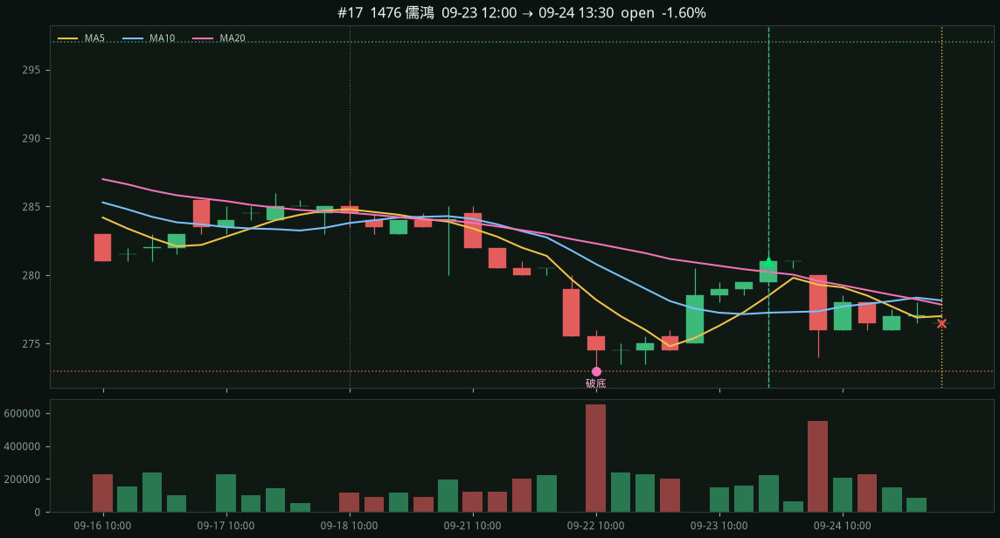
entry 193.50 stop 186.00 (−7.50) target 208.50 exit 195.50 open +2.00 破底 186.00 @ 09-23 11:00 站回 09-23 13:00 MA5 190.00 / MA10 191.35 / MA20 192.32 fwd +1d +1.03% +3d — +5d —
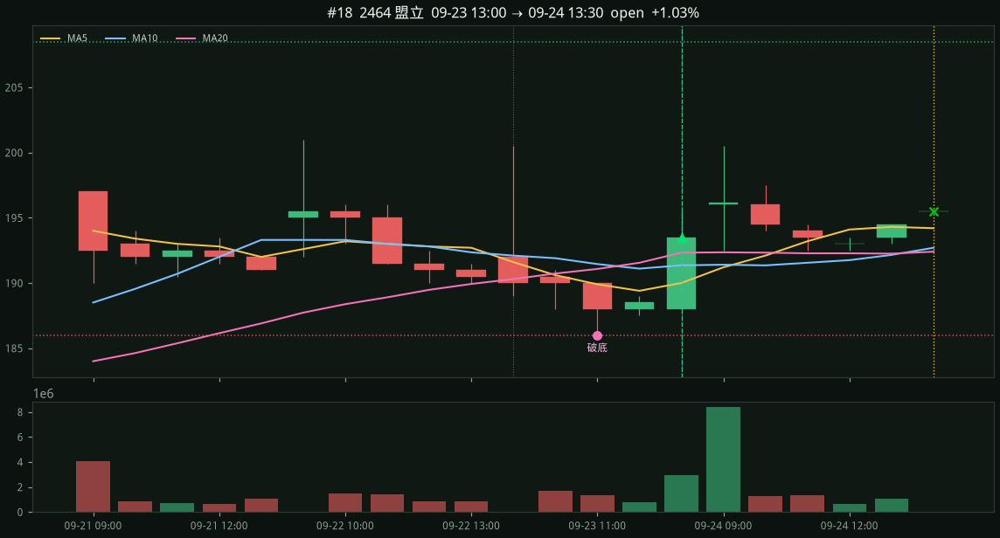
entry 798.00 stop 760.00 (−38.00) target 874.00 exit 810.00 open +12.00 破底 760.00 @ 09-23 13:00 站回 09-24 09:00 MA5 773.80 / MA10 777.80 / MA20 783.70 fwd +1d +1.50% +3d — +5d —
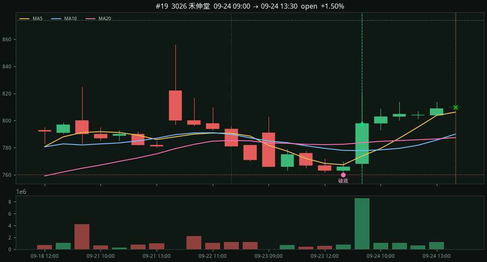
entry 138.00 stop 130.50 (−7.50) target 153.00 exit 139.00 open +1.00 破底 130.50 @ 09-24 09:00 站回 09-24 09:00 MA5 135.00 / MA10 135.10 / MA20 135.50 fwd +1d +0.72% +3d — +5d —
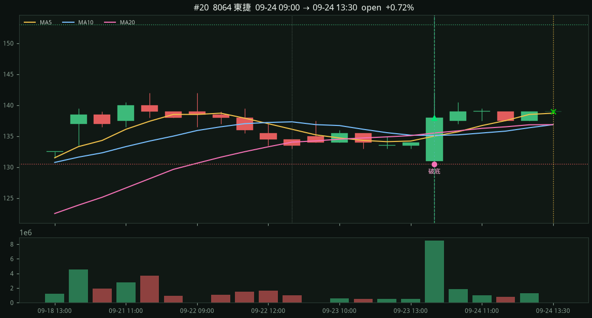
entry 269.00 stop 249.50 (−19.50) target 308.00 exit 276.00 open +7.00 破底 249.50 @ 09-23 13:00 站回 09-24 09:00 MA5 255.60 / MA10 256.95 / MA20 261.48 fwd +1d +2.60% +3d — +5d —
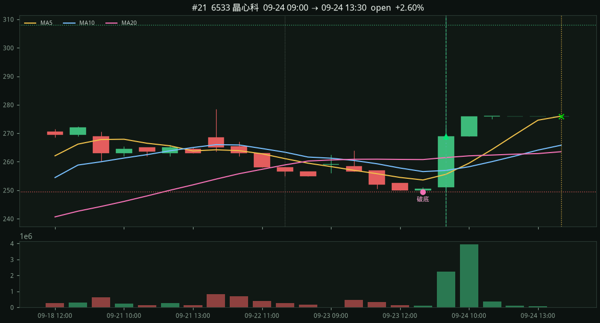
entry 258.00 stop 242.00 (−16.00) target 290.00 exit 258.00 open +0.00 破底 242.00 @ 09-24 09:00 站回 09-24 09:00 MA5 247.80 / MA10 248.20 / MA20 251.12 fwd +1d +0.00% +3d — +5d —
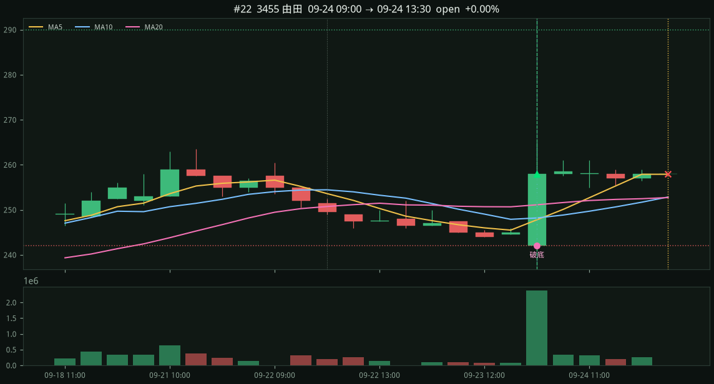
entry 47.15 stop 46.20 (−0.95) target 49.05 exit 47.60 open +0.45 破底 46.20 @ 09-23 11:00 站回 09-24 09:00 MA5 46.60 / MA10 46.64 / MA20 46.86 fwd +1d +0.95% +3d — +5d —
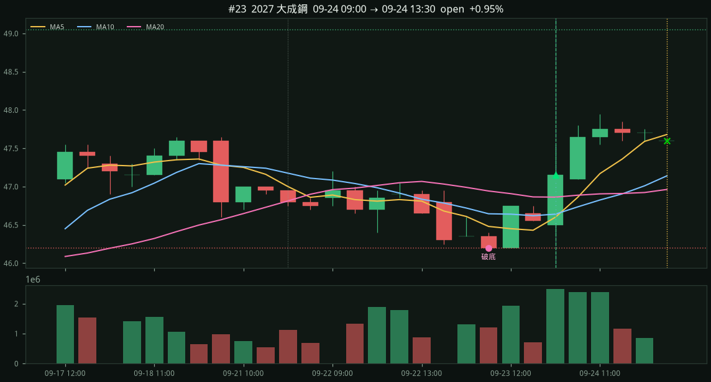
entry 79.20 stop 76.90 (−2.30) target 83.80 exit 79.90 open +0.70 破底 76.90 @ 09-22 12:00 站回 09-24 09:00 MA5 78.30 / MA10 77.95 / MA20 78.78 fwd +1d +0.88% +3d — +5d —
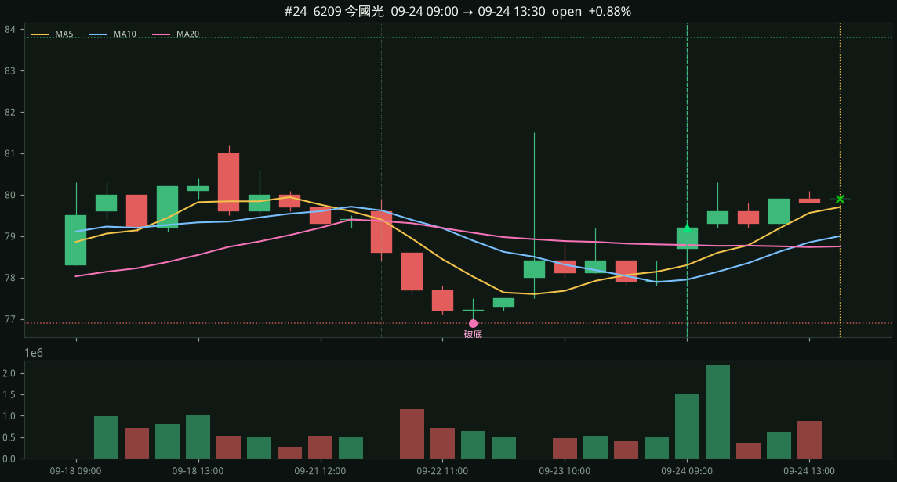
entry 115.00 stop 110.00 (−5.00) target 125.00 exit 114.00 open -1.00 破底 110.00 @ 09-24 09:00 站回 09-24 09:00 MA5 112.60 / MA10 112.75 / MA20 113.05 fwd +1d -0.87% +3d — +5d —
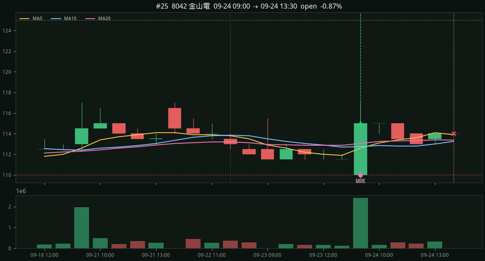
entry 50.90 stop 49.55 (−1.35) target 53.60 exit 52.30 open +1.40 破底 49.55 @ 09-23 09:00 站回 09-24 09:00 MA5 50.14 / MA10 50.11 / MA20 50.31 fwd +1d +2.75% +3d — +5d —
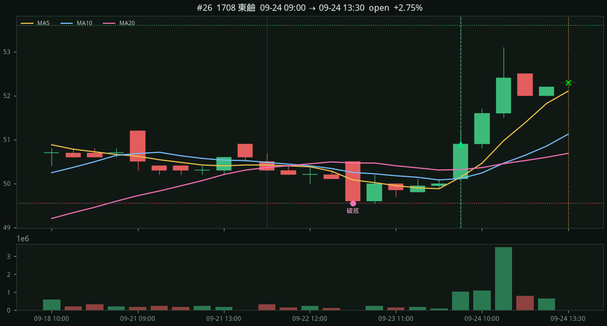
entry 286.00 stop 278.00 (−8.00) target 302.00 exit 287.00 open +1.00 破底 278.00 @ 09-24 09:00 站回 09-24 10:00 MA5 283.30 / MA10 284.15 / MA20 285.50 fwd +1d +0.35% +3d — +5d —
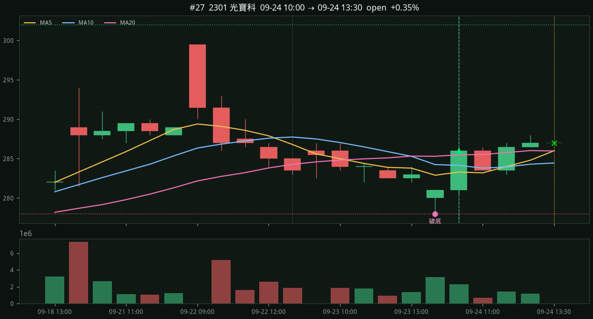
entry 145.00 stop 142.50 (−2.50) target 150.00 exit 146.00 open +1.00 破底 142.50 @ 09-24 09:00 站回 09-24 11:00 MA5 144.30 / MA10 144.95 / MA20 144.88 fwd +1d +0.69% +3d — +5d —
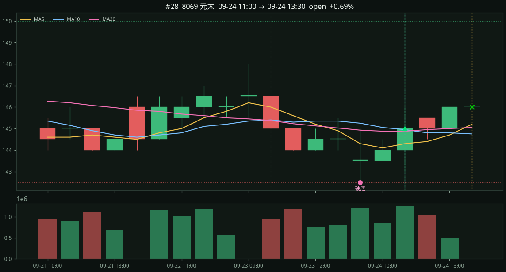
entry 177.00 stop 162.00 (−15.00) target 207.00 exit 178.00 open +1.00 破底 162.00 @ 09-24 09:00 站回 09-24 11:00 MA5 170.80 / MA10 171.40 / MA20 175.15 fwd +1d +0.56% +3d — +5d —
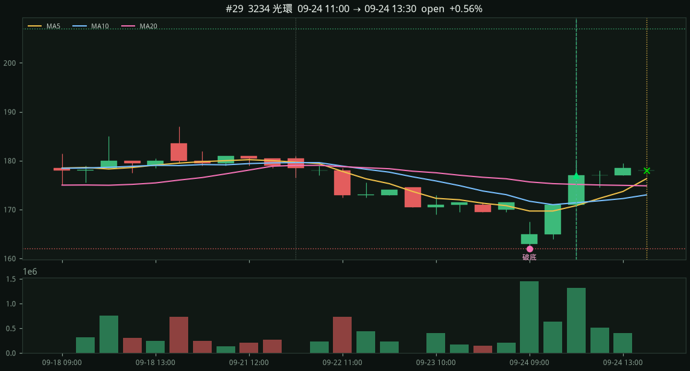
entry 191.00 stop 187.00 (−4.00) target 199.00 exit 190.50 open -0.50 破底 187.00 @ 09-23 10:00 站回 09-24 11:00 MA5 190.30 / MA10 189.85 / MA20 190.95 fwd +1d -0.26% +3d — +5d —
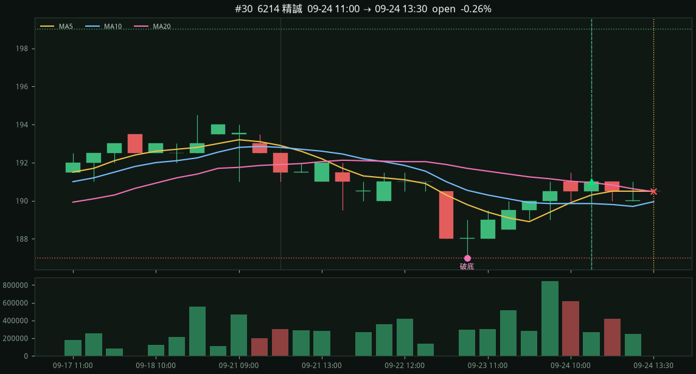
entry 237.00 stop 223.00 (−14.00) target 265.00 exit 238.00 open +1.00 破底 223.00 @ 09-23 11:00 站回 09-24 12:00 MA5 232.70 / MA10 230.20 / MA20 234.45 fwd +1d +0.42% +3d — +5d —
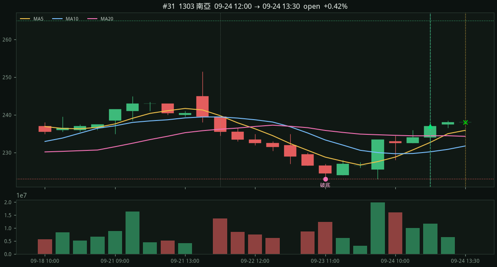
entry 183.50 stop 178.00 (−5.50) target 194.50 exit 184.50 open +1.00 破底 178.00 @ 09-24 09:00 站回 09-24 12:00 MA5 181.80 / MA10 181.20 / MA20 183.07 fwd +1d +0.54% +3d — +5d —
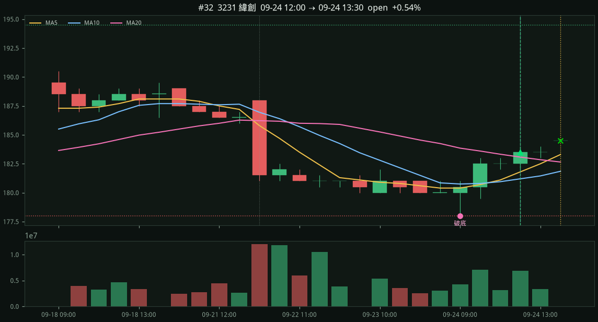
entry 66.90 stop 63.80 (−3.10) target 73.10 exit 67.00 open +0.10 破底 63.80 @ 09-24 09:00 站回 09-24 12:00 MA5 66.28 / MA10 66.07 / MA20 66.88 fwd +1d +0.15% +3d — +5d —
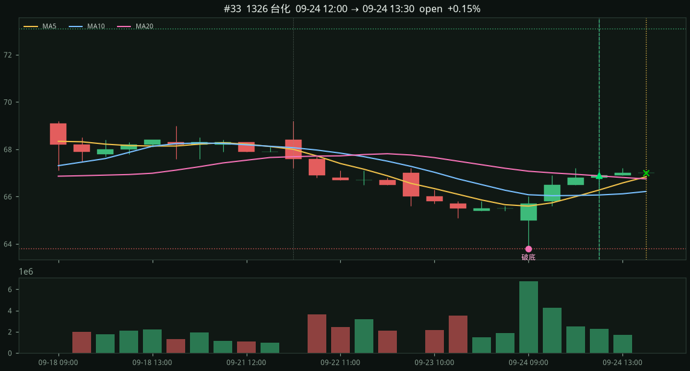
entry 654.00 stop 629.00 (−25.00) target 704.00 exit 652.00 open -2.00 破底 629.00 @ 09-24 09:00 站回 09-24 13:00 MA5 646.80 / MA10 643.10 / MA20 653.80 fwd +1d -0.31% +3d — +5d —
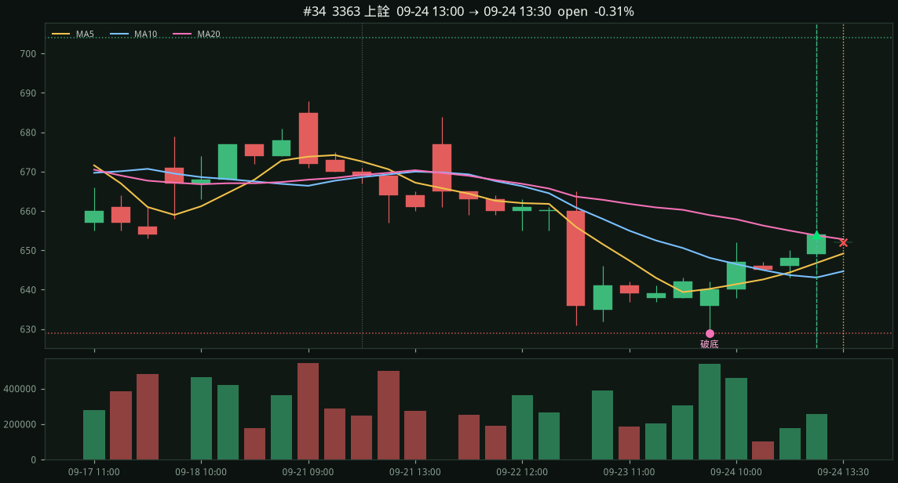
entry 108.00 stop 105.00 (−3.00) target 114.00 exit 108.00 open +0.00 破底 105.00 @ 09-24 09:00 站回 09-24 13:00 MA5 106.50 / MA10 106.95 / MA20 107.88 fwd +1d +0.00% +3d — +5d —
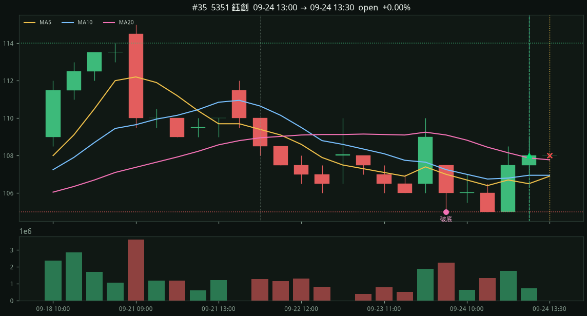